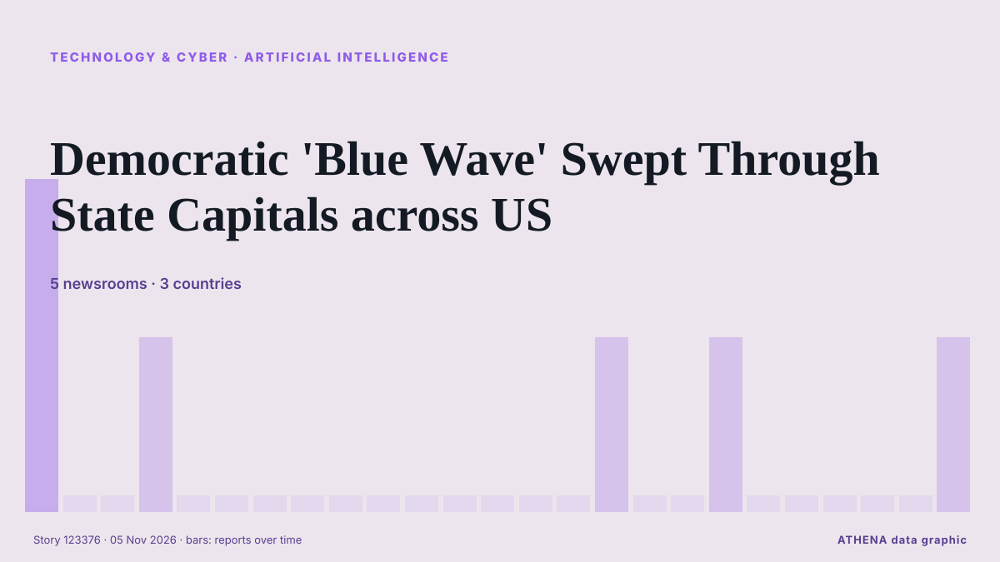

Τεχνολογία, ΤΝ & Κυβερνοασφάλεια
ΧορηγούμενοΠαρουσιάζεται από  Cybernetics and Artificial Intelligence Lab Welcome to the Cybernetics and Artificial Intelligence Laboratory, established at the Department of Business Administration of the National and Kapodistrian University of Athens. The lab is headed by Professor Dimitrios Thomakos. The lab aims to do research that can be published in top venues. Our research uses tools and methods of Artificial Intelligence, and lies in the following areas: - Forecasting - Decision making - Cyber security - Finance We are always looking forward to collaborating with exceptional students!
Cybernetics and Artificial Intelligence Lab Welcome to the Cybernetics and Artificial Intelligence Laboratory, established at the Department of Business Administration of the National and Kapodistrian University of Athens. The lab is headed by Professor Dimitrios Thomakos. The lab aims to do research that can be published in top venues. Our research uses tools and methods of Artificial Intelligence, and lies in the following areas: - Forecasting - Decision making - Cyber security - Finance We are always looking forward to collaborating with exceptional students!
Οι τίτλοι των ειδήσεων παρουσιάζονται στα αγγλικά, όπως δημοσιεύτηκαν.

Τεχνητή νοημοσύνηDemocratic 'Blue Wave' Swept Through State Capitals across US
Democrats absolutely crushed Republicans during the US midterm elections. από CleanTechnica
| 23 Οκτ | 55 |
|---|---|
| 24 Οκτ | 21 |
| 25 Οκτ | 26 |
| 26 Οκτ | 78 |
| 27 Οκτ | 84 |
| 28 Οκτ | 88 |
| 29 Οκτ | 89 |
| 30 Οκτ | 80 |
| 31 Οκτ | 34 |
| 1 Νοε | 47 |
| 2 Νοε | 110 |
| 3 Νοε | 98 |
| 4 Νοε | 81 |
| 5 Νοε | 45 |
Democrats Prepare Musk Probe Over Satellite Cuts
Senate Democrats have asked Elon Musk to preserve documents concerning the slowdown of Starshield in Ukraine, CNN reported. από Kyiv Post
SpaceX is working with Qualcomm to build its Starlink Mobile 5G network
SpaceX is teaming up with Qualcomm to build out its nationwide mobile network. από The Verge
Jack Grealish agreement reached as Everton manager David Moyes told what to do
Jack Grealish has missed the last three Everton games after breaching club discipline and David Moyes has been told how to deal with the winger. από Liverpool Echo
China blocks SoftBank's $5.4bn deal for ABB robotics division
The block adds a regulatory overhang to SoftBank on a day the shares were already under pressure from Arm and the AI selloff, and uncertainty over whether a fresh application is viable may keep that… από investingLive (ForexLive)
AI sharpens cat-and-mouse hacking battle as companies strengthen defences
From hacked supermarket fridges and a record cryptocurrency theft at Binance to an emergency over flaws in widely used web software, companies worldwide are facing a wave of cyber threats executives… από Tuoi Tre News
Qualcomm’s smartphone chip sales miss estimates, shares fall
Adjusted sales in Q4 fell 7% to US$10.44 billion, beating estimates of US$10.11 billion. από The Business Times
Google turns off AI for schoolchildren by default
Google has said it will switch off its AI tools for schoolchildren by default, after drawing criticism for pushing artificial intelligence features to students while schools are still debating how… από Vanguard
‘Godfather of AI’ Warns of ‘Chernobyl-Like’ AI Crisis Soon
Geoffrey Hinton, a Nobel Prize-winning computer scientist widely regarded as one of the pioneers of artificial intelligence, has warned that AI could trigger a Chernobyl-like crisis in the near… από Khaama Press
Nasa's 22-year-old Swift satellite telescope falls from orbit in fiery finale
WASHINGTON: Nasa’s Swift satellite telescope, which spent two decades studying the most powerful known blasts of energy in the cosmos, tumbled out of orbit as expected on Wednesday and burned up in… από New Straits Times
National Blood Centre says raise guard after France cyber attacks on blood banks
(ANSA) - ROME, 04 NOV - Italy's National Blood Centre on Wednesday called on Italian blood banks to raise their level of vigilance following cyber attacks in France that targeted the refrigeration… από ANSA English
Musk’s Tesla, SpaceX slide as Democrats take control of Congress
Tesla shares drop 2.6% and SpaceX slides 2.1% in early trading as Musk-backed Republicans lose Texas Senate and governor’s races. από Anadolu Agency (English)
S. Korea posts record high current account surplus of over US$60 bln in Sept. on chip supercycle
SEOUL, Nov. 5 (Yonhap) -- South Korea posted an all-time high current account su... από Yonhap (English)
NASA's Swift space telescope plunges back to Earth in fiery demise
NASA's Swift orbital observatory fell back to Earth after running its mission for more than two decades. από DW English
Chainalysis discloses data breach from "offensive agentic techniques"
Blockchain analytics firm Chainalysis disclosed a data breach after attackers used "offensive agentic techniques" to access internal systems and tools, exposing customer names, email addresses, user… από BleepingComputer
Missed calls puzzle Telstra customers
Telstra says a hack or cyber breach is not to blame for customers receiving mystery missed calls. από Sydney Morning Herald
British adventurer Karl Bushby completes 28-year walk around the world
On November 2, Karl Bushby finished his 28-year walk back to his English hometown of Hull. από NBC News (World)
Want an iPhone Duo for the holidays? Apple’s latest stock update isn’t reassuring
The iPhone Duo likely won’t make it into Santa’s sleigh this year. από ZDNet
Google AI chatbot may break press copyright rules: EU legal adviser
Google’s AI chatbot Gemini may infringe press copyright rules by reusing published content to generate answers, as highlighted by an EU legal adviser in a landmark case involving Hungarian publisher… από IOL
Cyberattack hits French blood banks
Three blood banks have detected and reversed a potentially destructive temperature spike in their cold rooms, following a cyberattack that targeted a refrigeration equipment provider of the French… από Help Net Security
Google dismantles botnet secretly running on 1.3 million Android TV boxes
Google has cut ties with the company behind the botnet campaign. από Ars Technica
Nvidia orders data centre clients to reduce China exposure
World’s biggest chipmaker tells cloud computing providers a majority of their clients must be non-Chinese. από Financial Times - Global economy
OpenAI hires former US Army Secretary Dan Driscoll for national security
OpenAI has hired Dan Driscoll, the 26th Secretary of the US Army, the company said on Monday. από The Next Web
UK Must Expect AI-Powered Attack on Critical Infrastructure Within Two Years: Report
Britain should be prepared for an AI-powered cyberattack on its critical national infrastructure in the next two years, the UK’s National Cyber Security Centre said on Tuesday, adding that China was… από Insurance Journal
Here's what to know about another cyberattack on European supermarket fridges
Experts say outdated technology and weak passwords are to blame. από PBS NewsHour
Drax plans a £20B AI data centre at Britain’s largest power station
Drax runs Britain’s largest power station, in North Yorkshire. από The Next Web
(LEAD) Lee orders review for establishment of cybersecurity task force
SEOUL, Nov. 3 (Yonhap) -- President Lee Jae Myung on Tuesday instructed official... από Yonhap (English)
Alibaba partners with Apple to integrate Qwen AI model into Apple Intelligence for Chinese market
Feature to launch with official iOS 27.3 release in December. από Anadolu Agency (English)
Anthropic Reports $17 Billion Quarterly Revenue Ahead of IPO
Anthropic’s revenue reached $17 billion for the three months ended Sept. από PYMNTS
Supermarket freezers in several European countries hit by apparent cyberattacks
Supermarkets in Sweden, Belgium, Luxembourg, Ireland and Estonia were hit Monday by problems with freezers and fridges that apparently were caused by cyberattacks, forcing some to dispose of ruined… από The Canadian Press (via CityNews)
Europe on alert after supermarket freezers hit by cyber-attacks in 10 countries
Supermarkets have reported problems from Estonia and Sweden to Portugal and Italy and many retainers have been forced to discard food. από BBC News
Fridge cyberattack hits supermarkets across Europe
Grocery stores in at least five European countries saw temperatures in their cold cases soar on Monday, with several confirming they had been hit by a cyberattack similar to one three weeks ago in… από Dawn
South Korea Investigates Online Leak of President's Passport Details
Personal information of 168 people, including Lee Jae Myung, posted on website. από Anadolu Agency (English)
Elon Musk says 'unsustainably high' costs are the reason for Grok Bot usage limits
The SpaceX CEO said the cost of serving the AI agent was "unsustainably high relative to revenue," after some users complained about usage limits. από Business Insider
Germany Says Lawmakers’ Phones May Be Hacked By Spyware
Apple sent threat alerts to German MPs and officials, and Berlin says affected iPhones should be treated as compromised in a suspected state-backed attack. από to vima